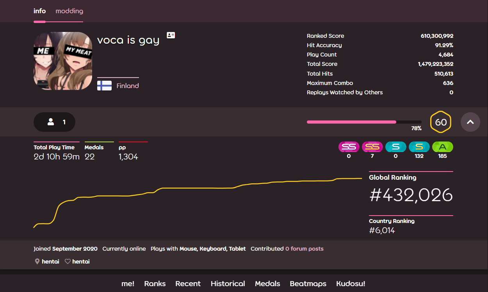

Voca is a 15 year old student from Finland and a professional osu! and CSGO player.
His osu! career

His osu! career started on 13 september 2020 and in
2 months of playing he achived rank #430k
which is really bad and he struggles to hit 50pp plays.
His accuracy is the only okay part about his profile coming in
at 91.29%. He sucks at holding combo which you can see at
his profile with the maximum combo only being 636.
His total play count is 4,600 and he has hit 510k circles in the
time he has played. His favorite song is BASS SLUT mapped by
the one and only Fatfan himself.
He reached 1,000pp on 29 October 2020 and his current total
pp is 1,304pp
Total time played: 2d 10h 59m
His top play is on Gravity Falls Theme Song - 16 Bit Mix
and its a whole 92pp with an accuracy of 96.30% which is good
for someone of his skill. As you can see he managed to hit 3 top plays
in only 1 day which is quite good. That day he gained quite a few ranks
(around 25k)
His CSGO career
Voca started playing CSGO in 2016 and played activly for the next year and
he managed to reach Gold Nova Master at the end of 2017